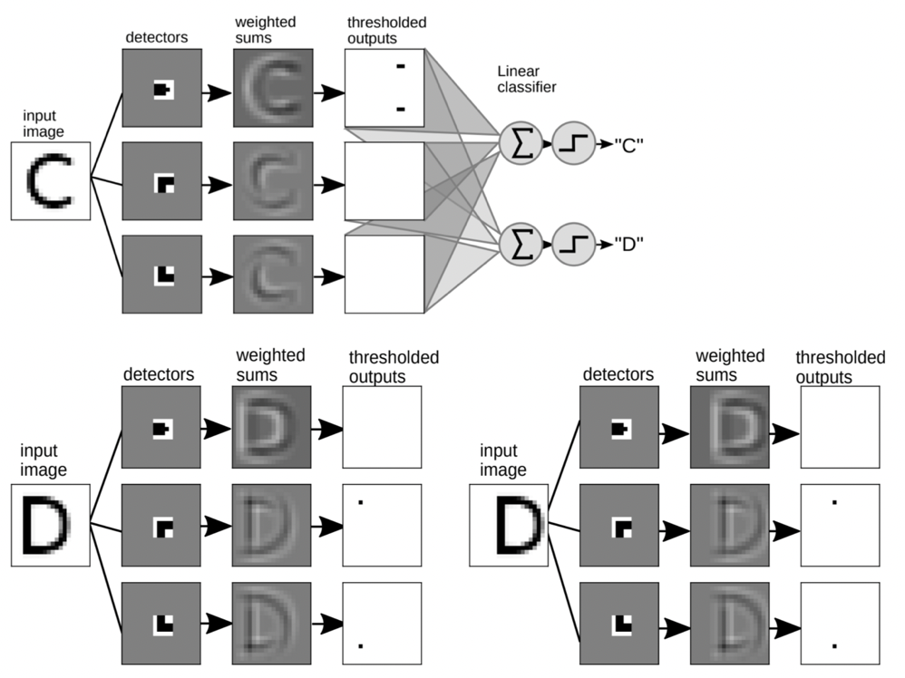

572 Quiz 2
Backpropagation
Basic concept
It is to calculate the gradient of the loss function with respect to the weights
It is a special case of the chain rule of calculus
Process:
- Do “forward pass” to calculate the output of the network (prediction and loss)

- Do “backward pass” to calculate the gradients of the loss function with respect to the weights. Below is an example of reverse-mode autmatic differentiation (backpropagation):

Torch: Autograd
torch.autogradis PyTorch’s automatic differentiation engine that powers neural network training
Vanishing and Exploding Gradients
- Backpropagation can suffer from two problems because of multiple chain rule applications:
- Vanishing gradients: the gradients of the loss function with respect to the weights become very small
- 0 gradients because of underflow
- Exploding gradients: the gradients of the loss function with respect to the weights become very large
- Vanishing gradients: the gradients of the loss function with respect to the weights become very small
- Possible solutions:
- Use ReLU activation function: but it can also suffer from the dying ReLU problem (gradients are 0)
- Weight initialization: initialize the weights with small values
- Batch normalization: normalize the input layer by adjusting and scaling the activations
- Skip connections: add connections that skip one or more layers
- Gradient clipping: clip the gradients during backpropagation
Training Neural Networks in PyTorch
Preventing Overfitting
- Add validation loss to the training loop
- Early stopping: if we see the validation loss is increasing, we stop training
- Define a patience parameter: if the validation loss increases for
patienceepochs, we stop training
- Define a patience parameter: if the validation loss increases for
- Regularization: add a penalty term to the loss function to prevent overfitting
- See 573 notes for more details
weight_decayparameter in the optimizer
- Dropout: randomly set some neurons to 0 during training
- It prevents overfitting by reducing the complexity of the model
torch.nn.Dropout(0.2)
PyTorch Trainer Code
import torch
import torch.nn as nn
def trainer(model, criterion, optimizer, trainloader, validloader, epochs=5, patience=5):
"""Simple training wrapper for PyTorch network."""
train_loss = []
valid_loss = []
for epoch in range(epochs): # for each epoch
train_batch_loss = 0
valid_batch_loss = 0
# Training
for X, y in trainloader:
optimizer.zero_grad() # Zero all the gradients w.r.t. parameters
y_hat = model(X).flatten() # Forward pass to get output
loss = criterion(y_hat, y) # Calculate loss based on output
loss.backward() # Calculate gradients w.r.t. parameters
optimizer.step() # Update parameters
train_batch_loss += loss.item() # Add loss for this batch to running total
train_loss.append(train_batch_loss / len(trainloader))
# Validation
with torch.no_grad(): # this stops pytorch doing computational graph stuff under-the-hood and saves memory and time
for X_valid, y_valid in validloader:
y_hat = model(X_valid).flatten() # Forward pass to get output
loss = criterion(y_hat, y_valid) # Calculate loss based on output
valid_batch_loss += loss.item()
valid_loss.append(valid_batch_loss / len(validloader))
# Early stopping
if epoch > 0 and valid_loss[-1] > valid_loss[-2]:
consec_increases += 1
else:
consec_increases = 0
if consec_increases == patience:
print(f"Stopped early at epoch {epoch + 1} - val loss increased for {consec_increases} consecutive epochs!")
break
return train_loss, valid_loss- Using the
trainerfunction:
import torch
import torch.nn
import torch.optim
torch.manual_seed(1)
model = network(1, 6, 1)
criterion = torch.nn.MSELoss()
optimizer = torch.optim.Adam(model.parameters(), lr=0.05) # weight_decay=0.01 for L2 regularization
train_loss, valid_loss = trainer(model, criterion, optimizer, trainloader, validloader, epochs=201, patience=3)
plot_loss(train_loss, valid_loss)Universal Approximation Theorem
- Any continuous function can be approximated arbitrarily well by a neural network with a single hidden layer
- In other words, NN are universal function approximators
Convolutional Neural Networks (CNN)

- Drastically reduces the number of params (compared to NN):
- have activations depend on small number of inputs
- same parameters (convolutional filter) are used for different parts of the image
- Can capture spatial information (preserves the structure of the image)
Convolution
- Idea: use a small filter/kernel to extract features from the image
- Filter: a small matrix of weights (normally odd dimensioned -> for symmetry)
- Notice that the filter results in a smaller output image
- This is because we are not padding the image
- We can add padding to the image to keep the same size
- Padding: add zeros around the image
- Can also add stride to move the filter more than 1 pixel at a time
CNN Structure

CNN in PyTorch
1. Convolutional Layer
conv_1 = torch.nn.Conv2d(in_channels=1, out_channels=6, kernel_size=(3,3))- Arguments:
in_channels: number of input channels (gray scale image has 1 channel, RGB has 3)out_channels: number of output channels (similar to hidden nodes in NN)kernel_size: size of the filterstride: how many pixels to move the filter each timepadding: how many pixels to add around the image

- Size of input image (e.g. 256x256) doesn’t matter, what matters is:
in_channels,out_channels,kernel_size
\[\text{total params} = (\text{out channels} \times \text{in channels} \times \text{kernel size}^2) + \text{out channels}\]
\[\text{output size} = \frac{\text{input size} - \text{kernel size} + 2 \times \text{padding}}{\text{stride}} + 1\]
Dimensions of images and kernel tensors in PyTorch
- Images:
[batch_size, channels, height, width] - Kernel:
[out_channels, in_channels, kernel_height, kernel_width]
2. Flattening
feature learning->classification- Use
torch.nn.Flatten()to flatten the image - At the end need to either do regression or classification
3. Pooling
- Idea: reduce the size of the image
- less params
- less overfitting
- Common types:
- Max pooling: take the max value in each region
- Works well since it takes the sharpest features
- Average pooling: take the average value in each region
- Max pooling: take the max value in each region
Putting it all together
class CNN(torch.nn.Module):
def __init__(self):
super().__init__()
self.main = torch.nn.Sequential(
torch.nn.Conv2d(in_channels=1,
out_channels=3,
kernel_size=(3, 3),
padding=1),
torch.nn.ReLU(), # activation function
torch.nn.MaxPool2d((2, 2)),
torch.nn.Conv2d(in_channels=3,
out_channels=2,
kernel_size=(3, 3),
padding=1),
torch.nn.ReLU(),
torch.nn.MaxPool2d((2, 2)),
torch.nn.Flatten(),
torch.nn.Linear(1250, 1)
)
def forward(self, x):
out = self.main(x)
return out- Trainer code is the same as before
Using torchsummary
- To get a summary of the model
- No need to manually calculate the output size of each layer
from torchsummary import summary
model = CNN()
summary(model, (1, 256, 256))Preparing Data
Turning images to tensors
- Normally there are 2 steps:
- create a
datasetobject: the raw data - create a
dataloaderobject: batches the data, shuffles, etc.
- create a
- Use
torchvisionto load the datatorchvision.datasets.ImageFolder: loads images from folders- Assumes structure:
root/class_1/xxx.png,root/class_2/xxx.png, …
import torch
from torchvision import datasets, transforms
IMAGE_SIZE = (256, 256)
BATCH_SIZE = 32
# create transform object
data_transforms = transforms.Compose([
transforms.Resize(IMAGE_SIZE),
transforms.ToTensor()
])
# create dataset object
train_dataset = datasets.ImageFolder(root='path/to/data', transform=data_transforms)
# check out the data
train_dataset.classes # list of classes
train_dataset.targets # list of labels
train_dataset.samples # list of (path, label) tuples
# create dataloader object
train_loader = torch.utils.data.DataLoader(
train_dataset, # our raw data
batch_size=BATCH_SIZE, # the size of batches we want the dataloader to return
shuffle=True, # shuffle our data before batching
drop_last=False # don't drop the last batch even if it's smaller than batch_size
)
# get a batch of data
images, labels = next(iter(train_loader))Saving and loading PyTorch models
- PyTorch documentation
- Convention:
.ptor.pthfile extension
PATH = "models/my_cnn.pt"
# load model
model = bitmoji_CNN() # must have defined the model class
model.load_state_dict(torch.load(PATH))
model.eval() # set model to evaluation mode (not training mode)
# save model
torch.save(model.state_dict(), PATH)Data augmentation
To make CNN more robust to different images + increase the size of the dataset
Common augmentations:
- Crop
- Rotate
- Flip
- Color jitter
data_transforms = transforms.Compose([
transforms.Resize(IMAGE_SIZE),
transforms.RandomVerticalFlip(p=0.5), # p=0.5 means 50% chance of applying this augmentation
transforms.RandomHorizontalFlip(p=0.5),
transforms.ToTensor()
])Hyperparameter Tuning
NN has a lot of hyperparameters
- Grid search will take a long time
- Need a smarter approach: Optimization Algorithms
Examples: Ax (we will use this), Raytune, Neptune, skorch.
Transfer Learning
- Idea: use a pre-trained model and fine-tune it to our specific task
- Install from
torchvision.models- All models have been trained on ImageNet dataset (224x224 images)
- See here for code
Approach 1: Adding layers to pre-trained model
densenet = models.densenet121(weights='DenseNet121_Weights.DEFAULT')
for param in densenet.parameters(): # Freeze parameters so we don't update them
param.requires_grad = False
# can fine-tune to freeze only some layers
list(densenet.named_children())[-1] # check the last layer
# update the last layer
new_layers = nn.Sequential(
nn.Linear(1024, 500),
nn.ReLU(),
nn.Linear(500, 1)
)
densenet.classifier = new_layersThen train the model as usual.
densenet.to(device)
criterion = nn.BCEWithLogitsLoss()
optimizer = torch.optim.Adam(densenet.parameters(), lr=2e-3)
results = trainer(densenet, criterion, optimizer, train_loader, valid_loader, device, epochs=10)Approach 2: Use Extracted Features in a New Model
- Idea:
- Take output from pre-trained model
- Feed output to a new model
def get_features(model, train_loader, valid_loader):
"""
Extract features from both training and validation datasets using the provided model.
This function passes data through a given neural network model to extract features. It's designed
to work with datasets loaded using PyTorch's DataLoader. The function operates under the assumption
that gradients are not required, optimizing memory and computation for inference tasks.
"""
# Disable gradient computation for efficiency during inference
with torch.no_grad():
# Initialize empty tensors for training features and labels
Z_train = torch.empty((0, 1024)) # Assuming each feature vector has 1024 elements
y_train = torch.empty((0))
# Initialize empty tensors for validation features and labels
Z_valid = torch.empty((0, 1024))
y_valid = torch.empty((0))
# Process training data
for X, y in train_loader:
# Extract features and concatenate them to the corresponding tensors
Z_train = torch.cat((Z_train, model(X)), dim=0)
y_train = torch.cat((y_train, y))
# Process validation data
for X, y in valid_loader:
# Extract features and concatenate them to the corresponding tensors
Z_valid = torch.cat((Z_valid, model(X)), dim=0)
y_valid = torch.cat((y_valid, y))
# Return the feature and label tensors
return Z_train, y_train, Z_valid, y_validNow we can use the extracted features to train a new model.
# Extract features from the pre-trained model
densenet = models.densenet121(weights='DenseNet121_Weights.DEFAULT')
densenet.classifier = nn.Identity() # remove that last "classification" layer
Z_train, y_train, Z_valid, y_valid = get_features(densenet, train_loader, valid_loader)
# Train a new model using the extracted features
# Let's scale our data
scaler = StandardScaler()
Z_train = scaler.fit_transform(Z_train)
Z_valid = scaler.transform(Z_valid)
# Fit a model
model = LogisticRegression(max_iter=1000)
model.fit(Z_train, y_train)Advanced CNN
Generative vs Discriminative Models
| Generative Models | Discriminative Models |
|---|---|
| Directly model the joint probability distribution of the input and output | Model the conditional probability of the output given the input |
| Directly model \(P(y\|x)\) | Estimate \(P(x\|y)\) to then deduce \(P(y\|x)\) |
| Build model for each class | Make boundary between classes |
| “Generate or draw a cat” | “Distinquish between cats and dogs” |
| Examples: Naibe bayes, ChatGPT | Examples: Logistic Regression, SVM, Tree based models, CNN |
Autoencoders

- Designed to reconstruct the input
- Encoder and a decoder
- Why do we need autoencoders?
- Dimensionality reduction
- Denoising
Dimensionality Reduction
- Maybe the z axis is unimportant in the input space for classification
from torch import nn
class autoencoder(torch.nn.Module):
def __init__(self, input_size, hidden_size):
super().__init__()
self.encoder = nn.Sequential(
nn.Linear(input_size, 2),
nn.Sigmoid()
)
self.decoder = nn.Sequential(
nn.Linear(2, input_size),
nn.Sigmoid()
)
def forward(self, x):
x = self.encoder(x)
x = self.decoder(x)
return x# Set up the training
BATCH_SIZE = 100
torch.manual_seed(1)
X_tensor = torch.tensor(X, dtype=torch.float32)
dataloader = DataLoader(X_tensor,
batch_size=BATCH_SIZE)
model = autoencoder(3, 2)
criterion = nn.MSELoss()
optimizer = optim.Adam(model.parameters())
# Train the model
EPOCHS = 5
for epoch in range(EPOCHS):
for batch in dataloader:
optimizer.zero_grad() # Clear gradients w.r.t. parameters
y_hat = model(batch) # Forward pass to get output
loss = criterion(y_hat, batch) # Calculate loss
loss.backward() # Getting gradients w.r.t. parameters
optimizer.step() # Update parameters
# Use encoder
model.eval()
X_encoded = model.encoder(X_tensor)Denoising
- Remove noise from the input
- Use Transposed Convolution Layers to upsample the input
- Normal convolution: downsample (output is smaller than input)
- Transposed convolution: upsample (output is larger than input)
def conv_block(input_channels, output_channels):
return nn.Sequential(
nn.Conv2d(input_channels, output_channels, 3, padding=1),
nn.ReLU(),
nn.MaxPool2d(2) # reduce x-y dims by two; window and stride of 2
)
def deconv_block(input_channels, output_channels, kernel_size):
return nn.Sequential(
nn.ConvTranspose2d(input_channels, output_channels, kernel_size, stride=2),
nn.ReLU()
)
class autoencoder(torch.nn.Module):
def __init__(self):
super().__init__()
self.encoder = nn.Sequential(
conv_block(1, 32),
conv_block(32, 16),
conv_block(16, 8)
)
self.decoder = nn.Sequential(
deconv_block(8, 8, 3),
deconv_block(8, 16, 2),
deconv_block(16, 32, 2),
nn.Conv2d(32, 1, 3, padding=1) # final conv layer to decrease channel back to 1
)
def forward(self, x):
x = self.encoder(x)
x = self.decoder(x)
x = torch.sigmoid(x) # get pixels between 0 and 1
return x# Set up the training
EPOCHS = 20
criterion = nn.MSELoss()
optimizer = torch.optim.Adam(model.parameters())
img_list = []
for epoch in range(EPOCHS):
losses = 0
for batch, _ in trainloader:
noisy_batch = batch + noise * torch.randn(*batch.shape)
noisy_batch = torch.clip(noisy_batch, 0.0, 1.0)
optimizer.zero_grad()
y_hat = model(noisy_batch)
loss = criterion(y_hat, batch)
loss.backward()
optimizer.step()
losses += loss.item()
print(f"epoch: {epoch + 1}, loss: {losses / len(trainloader):.4f}")
# Save example results each epoch so we can see what's going on
with torch.no_grad():
noisy_8 = noisy_batch[:1, :1, :, :]
model_8 = model(input_8)
real_8 = batch[:1, :1, :, :]
img_list.append(utils.make_grid([noisy_8[0], model_8[0], real_8[0]], padding=1))```Generative Adversarial Networks (GANs)
- Model used to generate new data (indistinguishable from real data)
- No need for labels (unsupervised learning)
- See here

- Two networks:
- Generator: creates new data
- Discriminator: tries to distinguish between real and fake data
- Both are battling each other:
- Generator tries to create data that the discriminator can’t distinguish from real data
- Discriminator tries to distinguish between real and fake data
Training GANs
- Train the discriminator (simple binary classification)
- Train the discriminator on real data
- Train the discriminator on fake data (generated by the generator)
- Train the generator
- Generate fake images with the generator and label them as real
- Pass to discriminator and ask it to classify them (real or fake)
- Pass judgement to a loss function (see how far it is from the ideal output)
- ideal output: all fake images are classified as real
- Do backpropagation and update the generator
- Repeat
Pytorch Implementation
Creating the data loader
DATA_DIR = "../input/face-recognition-dataset/Extracted Faces" BATCH_SIZE = 64 IMAGE_SIZE = (128, 128) data_transforms = transforms.Compose([ transforms.Resize(IMAGE_SIZE), # uses CPU (bottleneck) transforms.ToTensor(), transforms.Normalize((0.5, 0.5, 0.5), (0.5, 0.5, 0.5)) ]) dataset = datasets.ImageFolder(root=DATA_DIR, transform=data_transforms) data_loader = torch.utils.data.DataLoader(dataset, batch_size=BATCH_SIZE, shuffle=True)Creating the generator
class Generator(nn.Module): def __init__(self, LATENT_SIZE): super(Generator, self).__init__() self.main = nn.Sequential( nn.ConvTranspose2d(LATENT_SIZE, 1024, kernel_size=4, stride=1, padding=0, bias=False), nn.BatchNorm2d(1024), nn.LeakyReLU(0.2, inplace=True), ... nn.ConvTranspose2d(128, 3, kernel_size=4, stride=2, padding=1, bias=False), nn.BatchNorm2d(3), nn.Tanh() ) def forward(self, input): return self.main(input)Creating the discriminator
class Discriminator(nn.Module): def __init__(self): super(Discriminator, self).__init__() self.main = nn.Sequential( nn.Conv2d(3, 128, kernel_size=4, stride=2, padding=1, bias=False), nn.BatchNorm2d(128), nn.LeakyReLU(0.2, inplace=True), ... nn.Conv2d(512, 1, kernel_size=4, stride=1, padding=0, bias=False), nn.Flatten(), nn.Sigmoid() ) def forward(self, input): return self.main(input)Instantiating the models
device = torch.device('mps' if torch.backends.mps.is_available() else 'cpu') LATENT_SIZE = 100 generator = Generator(LATENT_SIZE).to(device) discriminator = Discriminator().to(device) criterion = nn.BCELoss() optimizerG = optim.Adam(generator.parameters(), lr=0.001, betas=(0.5, 0.999)) optimizerD = optim.Adam(discriminator.parameters(), lr=0.001, betas=(0.5, 0.999)) def weights_init(m): if isinstance(m, (nn.Conv2d, nn.ConvTranspose2d)): nn.init.normal_(m.weight.data, 0.0, 0.02) elif isinstance(m, nn.BatchNorm2d): nn.init.normal_(m.weight.data, 1.0, 0.02) nn.init.constant_(m.bias.data, 0) generator.apply(weights_init) discriminator.apply(weights_init);Training the GAN
img_list = [] fixed_noise = torch.randn(BATCH_SIZE, LATENT_SIZE, 1, 1).to(device) NUM_EPOCHS = 50 from statistics import mean print('Training started:\n') D_real_epoch, D_fake_epoch, loss_dis_epoch, loss_gen_epoch = [], [], [], [] for epoch in range(NUM_EPOCHS): D_real_iter, D_fake_iter, loss_dis_iter, loss_gen_iter = [], [], [], [] for real_batch, _ in data_loader: # STEP 1: train discriminator # ================================== optimizerD.zero_grad() real_batch = real_batch.to(device) real_labels = torch.ones((real_batch.shape[0],), dtype=torch.float).to(device) output = discriminator(real_batch).view(-1) loss_real = criterion(output, real_labels) # Iteration book-keeping D_real_iter.append(output.mean().item()) # Train with fake data noise = torch.randn(real_batch.shape[0], LATENT_SIZE, 1, 1).to(device) fake_batch = generator(noise) fake_labels = torch.zeros_like(real_labels) output = discriminator(fake_batch.detach()).view(-1) loss_fake = criterion(output, fake_labels) # Update discriminator weights loss_dis = loss_real + loss_fake loss_dis.backward() optimizerD.step() # Iteration book-keeping loss_dis_iter.append(loss_dis.mean().item()) D_fake_iter.append(output.mean().item()) # STEP 2: train generator # ================================== optimizerG.zero_grad() # Calculate the output with the updated weights of the discriminator output = discriminator(fake_batch).view(-1) loss_gen = criterion(output, real_labels) loss_gen.backward() # Book-keeping loss_gen_iter.append(loss_gen.mean().item()) # Update generator weights and store loss optimizerG.step() print(f"Epoch ({epoch + 1}/{NUM_EPOCHS})\t", f"Loss_G: {mean(loss_gen_iter):.4f}", f"Loss_D: {mean(loss_dis_iter):.4f}\t", f"D_real: {mean(D_real_iter):.4f}", f"D_fake: {mean(D_fake_iter):.4f}") # Epoch book-keeping loss_gen_epoch.append(mean(loss_gen_iter)) loss_dis_epoch.append(mean(loss_dis_iter)) D_real_epoch.append(mean(D_real_iter)) D_fake_epoch.append(mean(D_fake_iter)) # Keeping track of the evolution of a fixed noise latent vector with torch.no_grad(): fake_images = generator(fixed_noise).detach().cpu() #img_list.append(utils.make_grid(fake_images, normalize=True, nrows=10)) print("\nTraining ended.")Visualize training process
plt.plot(np.array(loss_gen_epoch), label='loss_gen') plt.plot(np.array(loss_dis_epoch), label='loss_dis') plt.xlabel("Epoch") plt.ylabel("Loss") plt.legend();plt.plot(np.array(D_real_epoch), label='D_real') plt.plot(np.array(D_fake_epoch), label='D_fake') plt.xlabel("Epoch") plt.ylabel("Probability") plt.legend();
Multi-Input Networks
class multiModel(nn.Module):
def __init__(self):
super().__init__()
...
def forward(self, image, data):
x_cnn = self.cnn(image) # 1st model: CNN
x_fc = self.fc(data) # 2nd model: Fully connected
return torch.cat((x_cnn, x_fc), dim=1) # concatenate the two outputs